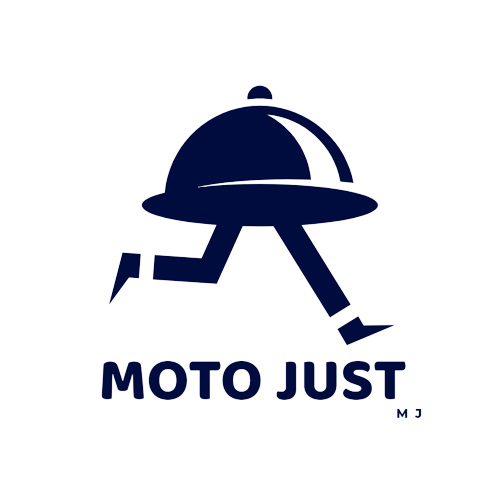

-
Restaurantes
Bem-vindo(a) ao nosso Portal de Taxas de Delivery
No coração de nosso compromisso com a equidade e a prosperidade, estamos dedicados a proporcionar uma experiência justa e segura para restaurantes parceiros como você. Ao fazer login, você está entrando em um mundo onde a transparência é fundamental e onde a parceria com motoboys é mais do que apenas uma entrega.
-
Motoboys
.png)
Saudações, Motoboy Destemido!
Você está prestes a se juntar a uma comunidade que valoriza o seu trabalho árduo e sua segurança financeira. Nossas taxas são projetadas para garantir que você seja recompensado justamente pelo seu esforço. Sua dedicação é o motor do nosso serviço, e estamos comprometidos em garantir que você seja tratado com respeito e justiça em cada entrega.
Sobre nós
-
História e Origens
A ideia deste projeto nasceu da necessidade de proporcionar uma solução que ofereça taxas de entrega mais justas aos motoboys, levando em consideração seus riscos e esforços. O projeto evoluiu de um conceito inicial para o protótipo atual, impulsionado por nossa paixão por criar um impacto positivo na comunidade de motoboys.
-
Missão e Valores
Nossa missão é promover uma relação mais equitativa entre motoboys e estabelecimentos comerciais, melhorando a segurança e a qualidade de vida desses profissionais. Valorizamos a justiça nas entregas, a segurança no trabalho e a melhoria contínua da experiência dos usuários.
-
Compromisso com a Comunidade
Estamos comprometidos em apoiar a comunidade de motoboys, promovendo práticas responsáveis de entrega e buscando maneiras de contribuir para o bem-estar daqueles que fazem parte dela.
-
Visão Futura
Temos a visão de expandir esta plataforma no futuro, tornando-a acessível em diferentes formatos, como sites para computadores/notebooks e aplicativos para diversos dispositivos. Queremos continuar aprimorando nossos recursos e alcançar um público mais amplo.